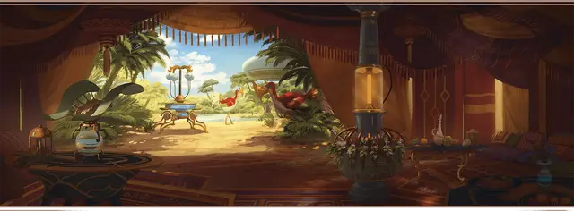

Затронутый гением
Genie Touched

Характеристики Ловкость, Мудрость, Харизма
Черта Посвящённый в магию
Навыки Восприятие, Убеждение
Инструменты Инструменты стеклодува
Снаряжение Выберите А или Б: (А) Лёгкий молот, Инструменты стеклодува, Отличная одежда, Лампа, 3 фляги Масла, Бурдюк и 2 ЗМ; или (Б) 50 ЗМ
Гении нынче не правят Калимшаном, но их магию ещё несложно найти в землях вашей родины. Может быть, вы случайно выпустили джинна из волшебной лампы, а может, набрели на оазис, где живёт марид. Возможно, дао спас вас из оползня, или вы заключили сделку с ифритом, в которой разбогатели быстро, но ненадолго. Что бы с вами ни случилось, из встречи с гением вы вынесли острый глаз, дар убеждения и толику магии.